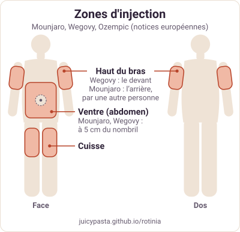

Gratuit, sans publicité, sans inscription
Aussi en : English · Deutsch · Español · Português
En anglais, un stylo par page : Mounjaro · Wegovy · Ozempic · Zepbound
Comment injecter Mounjaro, Wegovy ou Ozempic : zones d'injection selon la notice
En bref : les trois s'injectent sous la peau du ventre, de la cuisse ou du haut du bras, jamais dans une veine ou dans un muscle. Pour Mounjaro et Wegovy, la notice demande de rester à 5 cm du nombril sur le ventre. Pour Mounjaro, c'est l'arrière du haut du bras, et une autre personne doit faire l'injection à cet endroit. Aucune notice ne désigne un seul meilleur site.
Mounjaro contient du tirzépatide, Wegovy et Ozempic du sémaglutide. Cette page montre ce que dit la notice de chaque stylo : où piquer, ventre ou cuisse, et comment se servir du stylo.
Le planificateur ci-dessous suit la rotation pour vous : touchez le site utilisé la dernière fois et il vous montre le suivant.
Planificateur de rotation des sites d'injection
Touchez le site utilisé la dernière fois. Si vous vous souvenez des précédents, touchez-les dans l'ordre, du plus ancien au plus récent.
Votre côté gauche est à gauche sur les deux silhouettes.
Ventre (Mounjaro et Wegovy : à 5 cm du nombril)
Cuisses (le devant)
Haut des bras (Mounjaro : l'arrière, injection faite par une autre personne)
Vos sites, du plus récent au plus ancien : aucun pour l’instant.
Sites que vous utilisez (6 sur 8)
Le planificateur ne propose que les sites cochés. Comme l'app Rotinia, il commence avec les quatre sites du ventre et les deux cuisses ; cochez les bras si vous y faites aussi vos injections.
Ce que vous touchez est enregistré uniquement dans le stockage local de ce navigateur, sur cet appareil, pour que le planificateur s'en souvienne la prochaine fois. Rien n'est envoyé. Décochez la case pour ne plus rien enregistrer, ou effacez tout avec le bouton Effacer mes sites.
Laissez Rotinia suivre la rotation
Rotinia est une app pour noter vos injections de GLP-1, aussi en français. Chaque fois que vous enregistrez une injection, elle propose le site suivant avec cette même règle, et son schéma du corps montre quand vous avez utilisé chaque site pour la dernière fois. Les rappels et le suivi du poids et des effets indésirables sont gratuits pour toujours, sans compte et sans publicité, et tout reste sur votre téléphone.
Rotinia est un carnet, jamais un outil de dosage : l'app note ce que vous injectez et ne vous dit pas quelle dose prendre.
Bientôt sur l'App Store pour iPhone. À propos de Rotinia (en anglais)
Comment injecter Mounjaro (tirzépatide)
La notice européenne de Mounjaro KwikPen dit : « Mounjaro doit être injecté sous la peau (injection sous-cutanée) du ventre (abdomen) à au moins 5 cm du nombril ou du haut de la jambe (cuisse) ou de l’arrière du haut du bras. » Et ensuite : « Une autre personne doit vous aider si vous optez pour des injections dans l’arrière du haut du bras. »
Le manuel d'utilisation du stylo le résume ainsi :
- « L’injection peut être effectuée par vous-même ou par une autre personne dans la cuisse ou le ventre (abdomen) à au moins 5 cm du nombril. »
- « L’injection peut être effectuée dans l’arrière du haut du bras si c’est une autre personne qui vous la fait. »
- « Changez de site d'injection chaque semaine. Vous pouvez utiliser la même zone du corps, mais vous devez choisir un site d'injection différent dans cette zone. »
Le résumé des caractéristiques du produit (RCP) ajoute : « Les sites d’injection doivent être alternés à chaque administration. » Si vous faites aussi des injections d'insuline, la notice dit : « Si vous réalisez également une injection d’insuline, choisissez un autre site d’injection pour cette dernière. »
Cette page ne cite, pour Mounjaro, que la notice, le manuel d'utilisation et le RCP européens de Mounjaro KwikPen. Si votre tirzépatide se présente dans un autre stylo ou sous une autre forme, suivez les instructions qui l'accompagnent.
Ce que dit la notice américaine de Mounjaro, en anglais : Mounjaro injection sites.
Comment injecter Wegovy (sémaglutide)
La notice de Wegovy FlexTouch dit : « Wegovy doit être administré par injection sous la peau (injection sous-cutanée). Ne l’injectez pas directement dans une veine ou dans un muscle. » Et : « Les meilleurs endroits pour réaliser l’injection sont le devant du haut du bras, la cuisse ou le ventre. »
Les instructions du stylo disent deux choses que celles d'Ozempic ne disent pas :
- la distance au nombril : « Choisissez le haut du bras, la cuisse ou le ventre (à une distance de 5 cm du nombril). »
- la rotation : « Vous pouvez injecter dans la même zone du corps, mais assurez-vous que le point d’injection ne soit pas celui utilisé pour l’injection précédente. »
Le RCP dit : « Il doit être injecté par voie sous-cutanée dans l’abdomen, la cuisse ou le haut du bras. Le site d’injection peut être modifié sans ajustement de la dose. »
Ce que dit la notice américaine de Wegovy, en anglais : Wegovy injection sites.
Comment injecter Ozempic (sémaglutide) : le site d'injection
Ozempic a la même substance active que Wegovy, le sémaglutide, dans un autre stylo et avec sa propre notice. La notice du stylo Ozempic dit : « Ozempic doit être administré par injection sous la peau (injection sous-cutanée). Ne l’injectez pas directement dans une veine ou dans un muscle. » Et elle nomme les zones : « Les meilleurs endroits pour réaliser vos injections sont le dessus de la cuisse, le ventre (abdomen) ou le haut du bras. »
Le RCP dit : « Ozempic doit être injecté par voie sous-cutanée dans l’abdomen, la cuisse ou le haut du bras. Le site d’injection peut être modifié sans ajustement de la dose. »
La notice du stylo Ozempic ne parle ni de changer de site ni de distance au nombril. Cette page ne cite, pour Ozempic, que le stylo prérempli ; la seringue préremplie d'Ozempic a sa propre notice, avec ses propres indications.
Ce que dit la notice américaine d'Ozempic, en anglais : Ozempic injection sites.

| Médicament | Ventre | Cuisse | Bras |
|---|---|---|---|
| Mounjaro (tirzépatide) | Oui, à au moins 5 cm du nombril | Oui | L'arrière, injection faite par une autre personne |
| Wegovy (sémaglutide) | Oui, à 5 cm du nombril | Oui | Oui (le devant du haut du bras) |
| Ozempic (sémaglutide) | Oui | Oui (le dessus) | Oui (le haut du bras) |
Ventre ou cuisse : où injecter de préférence ?
Aucune des trois notices ne désigne un seul meilleur site. Le RCP de Mounjaro dit : « Une exposition similaire a été obtenue avec une administration sous-cutanée de tirzépatide dans l’abdomen, la cuisse ou le haut du bras. » Ceux de Wegovy et d'Ozempic disent la même chose pour le sémaglutide : « Une exposition similaire a été obtenue avec une administration sous-cutanée de sémaglutide dans l’abdomen, la cuisse ou le haut du bras. » L'exposition, c'est la quantité de médicament qui arrive dans le sang.
Ventre ou cuisse n'est donc pas, selon les notices, une question de mieux ou de moins bien : les deux sont nommés, pour Mounjaro comme pour Wegovy. Les notices de Mounjaro et de Wegovy demandent seulement de ne pas reprendre le même point que la dernière fois.
Changer de site d'injection : ce que disent les notices
Mounjaro est le plus clair : on change de site à chaque injection, même en restant dans la même zone du corps. Pour Wegovy, la même zone convient, mais pas le même point que la dernière fois. La notice du stylo Ozempic n'a pas cette règle. La notice américaine d'Ozempic demande un site différent à chaque injection ; c'est sur la page en anglais, Ozempic injection sites.
Alterner n'oblige pas à changer de zone du corps : quatre points sur le ventre donnent déjà un point différent à chaque fois.
Comment alterner : un schéma simple à 8 sites
Divisez les trois zones en huit sites et passez au suivant à chaque injection ; à la fin, recommencez au début :
- Haut de l’abdomen, à gauche
- Haut de l’abdomen, à droite
- Bas de l’abdomen, à gauche
- Bas de l’abdomen, à droite
- Cuisse gauche
- Cuisse droite
- Haut du bras gauche
- Haut du bras droit
Sur le ventre, restez à 5 cm du nombril, comme le demandent Mounjaro et Wegovy. Si vous n'utilisez pas les bras (pour Mounjaro, une autre personne doit y faire l'injection), il reste six sites ; si vous n'utilisez que le ventre, ses quatre sites donnent déjà un point différent à chaque fois.
Le planificateur ci-dessus applique la règle de Rotinia : le site suivant est celui que vous avez utilisé il y a le plus longtemps, parmi les sites cochés. Ceux que vous n'avez jamais utilisés passent en premier, dans l'ordre de cette liste. Avec deux sites cochés ou plus, il ne propose jamais le site de la dernière injection.
Comment injecter avec le stylo : l'essentiel selon la notice
Lisez toujours les instructions d'utilisation qui sont dans la boîte : elles montrent chaque étape en images, et votre médecin, votre infirmier/ère ou votre pharmacien peut vous montrer comment faire. Ici, seulement le maniement du stylo, rien sur les doses.
Mounjaro KwikPen
- « Lavez-vous les mains avec du savon et de l’eau. »
- « Utilisez toujours une nouvelle aiguille pour stylo à chaque injection afin de prévenir les infections et l’obstruction des aiguilles. »
- Avant l'injection, le stylo est purgé comme l'indique le manuel : « Votre stylo a été purgé si une petite quantité de médicament sort de la pointe de l’aiguille du stylo. »
- « Injectez le médicament en appuyant sur le bouton d’injection jusqu'à la butée, puis comptez lentement jusqu'à 5 tout en maintenant le bouton d’injection enfoncé. »
- « Si vous voyez du sang après avoir retiré l'aiguille de votre peau, appuyez légèrement sur le site d'injection avec une compresse de gaze ou une boule de coton. Ne frottez pas le site d'injection. »
- « Ne conservez pas le stylo avec l'aiguille fixée dessus pour éviter les fuites, l’obstruction de l'aiguille et l'entrée d'air dans le stylo. »
Wegovy FlexTouch
- « Utilisez toujours une nouvelle aiguille pour chaque injection. »
- « Contrôlez le débit de Wegovy uniquement avant votre première injection de chaque nouveau stylo. »
- « Insérez l’aiguille dans la peau. » Maintenez le bouton de dose enfoncé comme le montrent les instructions et « comptez lentement jusque 6 » avant de retirer l'aiguille.
- « Si du sang apparaît au site d’injection, appuyez doucement sur la zone pour arrêter le saignement. »
- « Ne conservez jamais le stylo avec l’aiguille connectée. »
- « Remettez le capuchon du stylo en place sur votre stylo après chaque utilisation pour protéger Wegovy de la lumière. »
Stylo Ozempic
- « Utilisez toujours une aiguille neuve lors de chaque injection. »
- « Vérifiez l’écoulement uniquement avant votre première injection avec chaque stylo neuf. »
- « Insérez l’aiguille dans votre peau comme votre médecin ou votre infirmier/ère vous l’a montré. » Maintenez le bouton de dose enfoncé jusqu'à ce que le compteur revienne à 0, puis : « Comptez lentement jusqu’à 6 en maintenant le bouton de dose enfoncé. »
- « Si du sang apparaît au niveau du site d’injection, appuyez légèrement. »
- « Remettez le capuchon sur votre stylo après chaque utilisation pour protéger la solution de la lumière. »
Questions sur Mounjaro, Wegovy et Ozempic
Comment injecter Mounjaro ?
En bref, selon le manuel d'utilisation de Mounjaro KwikPen : lavez-vous les mains, vérifiez le stylo et l'étiquette, fixez une nouvelle aiguille et purgez le stylo. Ensuite : « Injectez le médicament en appuyant sur le bouton d’injection jusqu'à la butée, puis comptez lentement jusqu'à 5 tout en maintenant le bouton d’injection enfoncé. » Chaque étape est illustrée dans le manuel qui est dans la boîte.
Où injecter Mounjaro : ventre ou cuisse ?
Les deux. La notice dit : « Mounjaro doit être injecté sous la peau (injection sous-cutanée) du ventre (abdomen) à au moins 5 cm du nombril ou du haut de la jambe (cuisse) ou de l’arrière du haut du bras. » Le RCP ajoute qu'une exposition similaire a été obtenue dans l'abdomen, la cuisse ou le haut du bras.
Comment injecter Wegovy ?
Sous la peau, jamais dans une veine ou un muscle. La notice de Wegovy FlexTouch dit : « Les meilleurs endroits pour réaliser l’injection sont le devant du haut du bras, la cuisse ou le ventre. » Les instructions du stylo ajoutent de rester à 5 cm du nombril, d'utiliser une nouvelle aiguille pour chaque injection et de compter lentement jusqu'à 6 avant de retirer l'aiguille.
Quelle est la zone d'injection de Wegovy ?
Les instructions du stylo disent : « Choisissez le haut du bras, la cuisse ou le ventre (à une distance de 5 cm du nombril). » Et : « Vous pouvez injecter dans la même zone du corps, mais assurez-vous que le point d’injection ne soit pas celui utilisé pour l’injection précédente. »
Quel est le site d'injection d'Ozempic ?
La notice du stylo Ozempic dit : « Les meilleurs endroits pour réaliser vos injections sont le dessus de la cuisse, le ventre (abdomen) ou le haut du bras. » Le RCP ajoute : « Le site d’injection peut être modifié sans ajustement de la dose. »
Faut-il changer de site à chaque injection de Mounjaro, Wegovy ou Ozempic ?
Pour Mounjaro, oui. Le RCP dit : « Les sites d’injection doivent être alternés à chaque administration. » Pour Wegovy, la même zone convient, mais pas le point utilisé pour l'injection précédente. La notice d'Ozempic n'a pas cette règle.
Journal de rotation à imprimer
Une feuille à garder près de vos stylos : notez la date et cochez chaque injection. La colonne des sites peut se remplir seule dans l'ordre de rotation, en commençant par le site suivant du planificateur.
Journal de rotation des sites d'injection
Un point différent à chaque injection. Ventre, cuisse ou haut du bras. Suivez les instructions qui accompagnent votre stylo.
| # | Date | Site | Notes |
|---|
Planificateur et journal gratuits : juicypasta.github.io/rotinia/fr/comment-injecter-mounjaro-wegovy-ozempic/ · Rotinia n'est pas affiliée à Eli Lilly ni à Novo Nordisk.
Cette page ne remplace pas les indications de votre médecin ou de votre pharmacien. Suivez les instructions qui accompagnent votre stylo et, en cas de doute, parlez-en à votre médecin ou à votre pharmacien. Elle traite seulement de l'endroit où injecter et de la rotation des sites ; elle ne donne pas de conseil médical et ne parle pas de doses.
Mounjaro est une marque déposée d'Eli Lilly and Company ; Ozempic et Wegovy sont des marques déposées de Novo Nordisk. Rotinia n'est affiliée ni à Eli Lilly ni à Novo Nordisk, et n'est pas soutenue par ces sociétés.
Sources
Les citations viennent des informations produit de l'Union européenne en français (RCP, étiquetage et notice avec les instructions d'utilisation), publiées par l'Agence européenne des médicaments (EMA), consultées le 2026-11-28. Pour ces médicaments autorisés au niveau européen, c'est le même texte que la notice dans la boîte en France et en Belgique. Chaque citation de cette page a été comparée à ce texte :
- Mounjaro (tirzépatide), information produit, Eli Lilly, PDF du 2026-08-18 ; cité : Mounjaro KwikPen
- Wegovy (sémaglutide), information produit, Novo Nordisk, PDF du 2026-10-13 ; cité : Wegovy FlexTouch
- Ozempic (sémaglutide), information produit, Novo Nordisk, PDF du 2026-07-20 ; cité : Ozempic stylo prérempli
La règle de rotation de la notice américaine d'Ozempic vient de DailyMed (National Library of Medicine des États-Unis) : Ozempic.